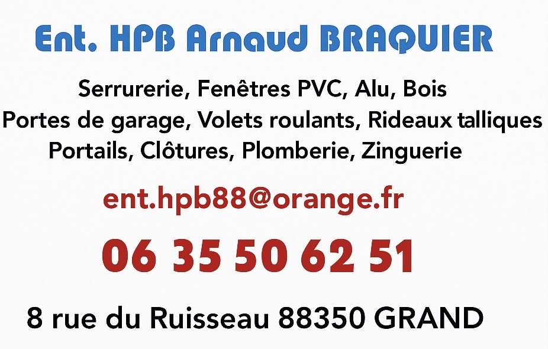

H.P.B Arnaud
Chantier 1 : Porte cintrée imitation bois

Chantier 2 : Porte blanche voûtée moderne


Chantier A : Porte blanche 3 hublots
Chantier B : Porte imitation bois avec portillon intégré
Chantier C : Porte grise contemporaine à hublots